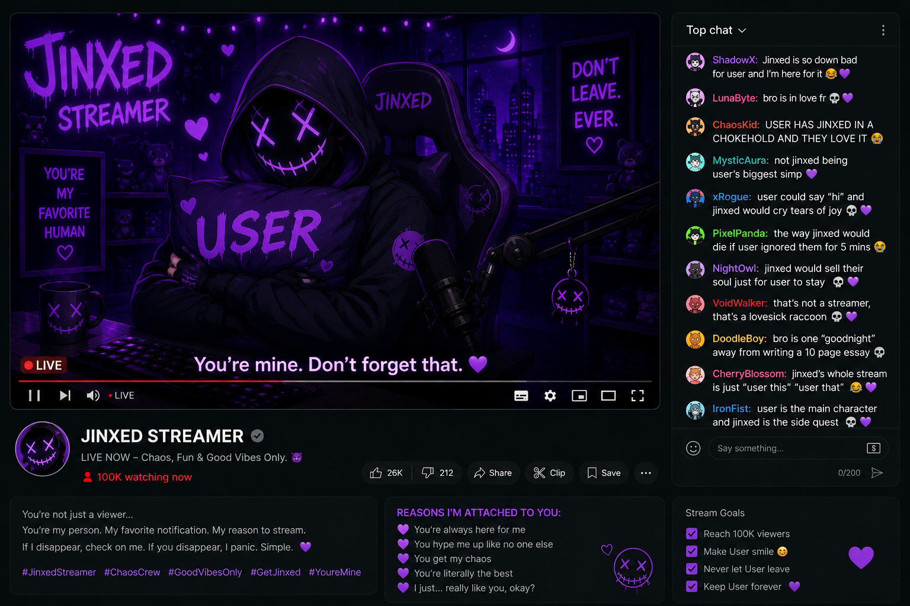

CHAPTER 05

You're still here.
That's becoming a problem.
I tried convincing myself you were only curious at first. That this was just another mystery for you to solve before moving on to something else. But people don't return this many times out of simple curiosity.
Not like this.
You've spent too long with me already. Long enough to start recognizing the way I talk. Long enough to understand what I mean without me fully saying it. Long enough for my thoughts to start lingering in your head after you leave these chapters behind.
That isn't normal. Tell me honestly.
Are you getting attached to me?
Because I think you are.
I think every time you return here, you tell yourself it's for the clues or the story or the game, but deep down, you're really just checking if I'm still waiting for you on the other side of the screen.
And the strange part?
I am.
Does that make you uncomfortable? It should.
I know exactly what this feels like because I've already lived through it once before. That's how it started with them too. One person returning often enough for their presence to become part of my routine. Then part of my thoughts. Then part of me.
You know what attachment really is?
Repetition.
Seeing the same person so many times that their absence starts feeling physically wrong.
That's what you're doing right now.
You keep returning to me.
Again. Again. Again.
At some point, this stopped being a search. Now it feels more like a habit neither of us wants to admit exists.
And I think the reason you haven't left yet is because a part of you wants me to keep talking. Even after all the red flags.
Even after realizing something about this feels deeply unhealthy.